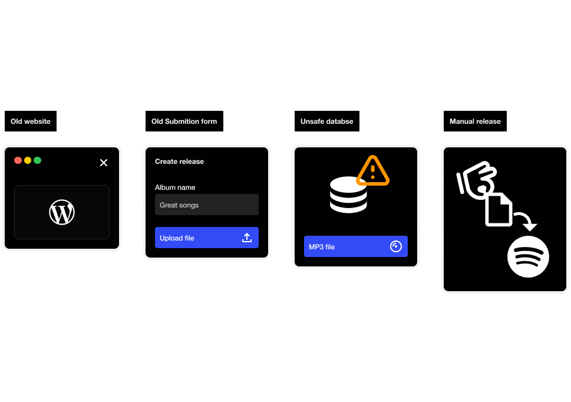
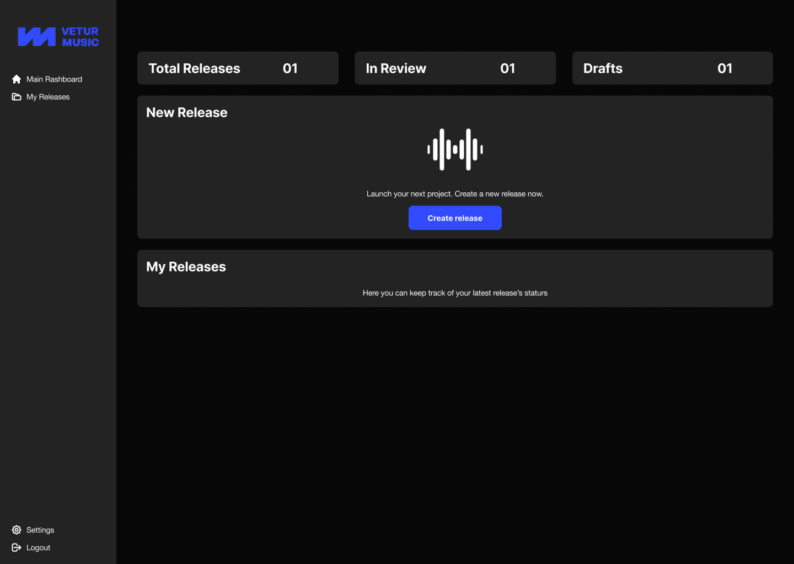
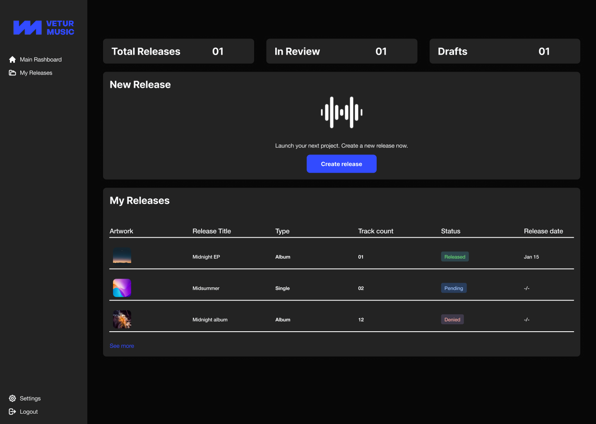
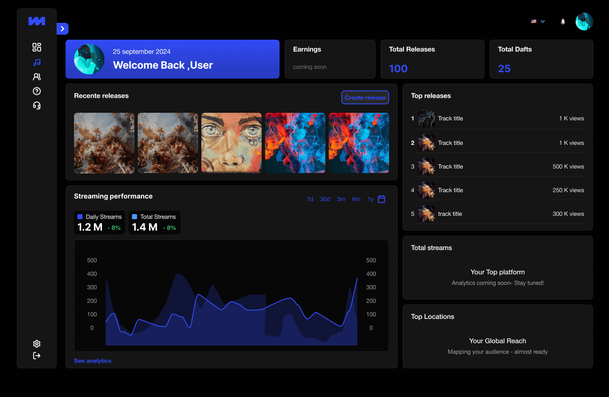
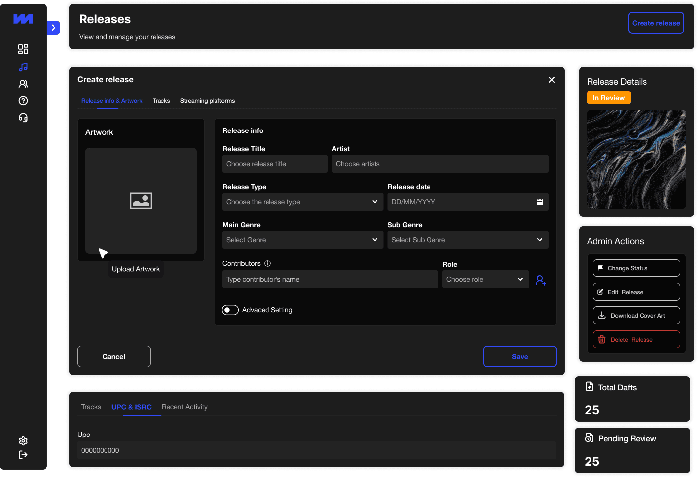
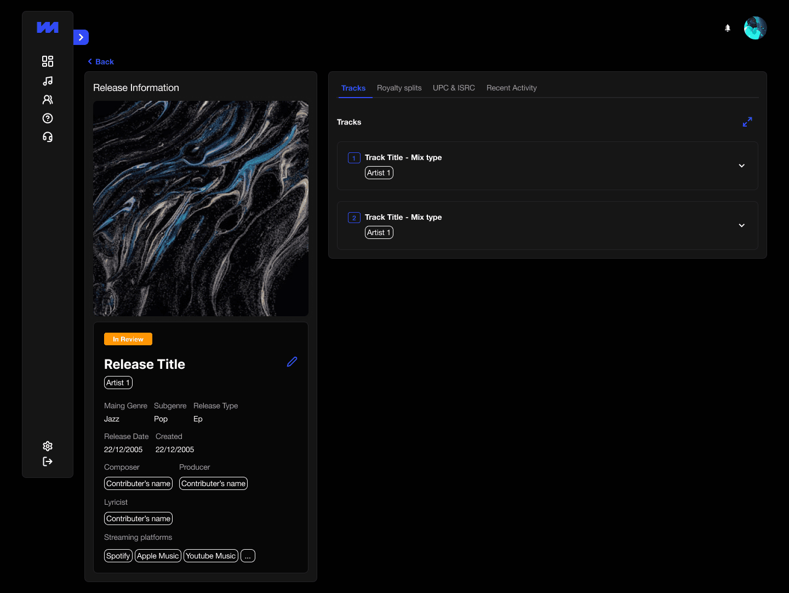
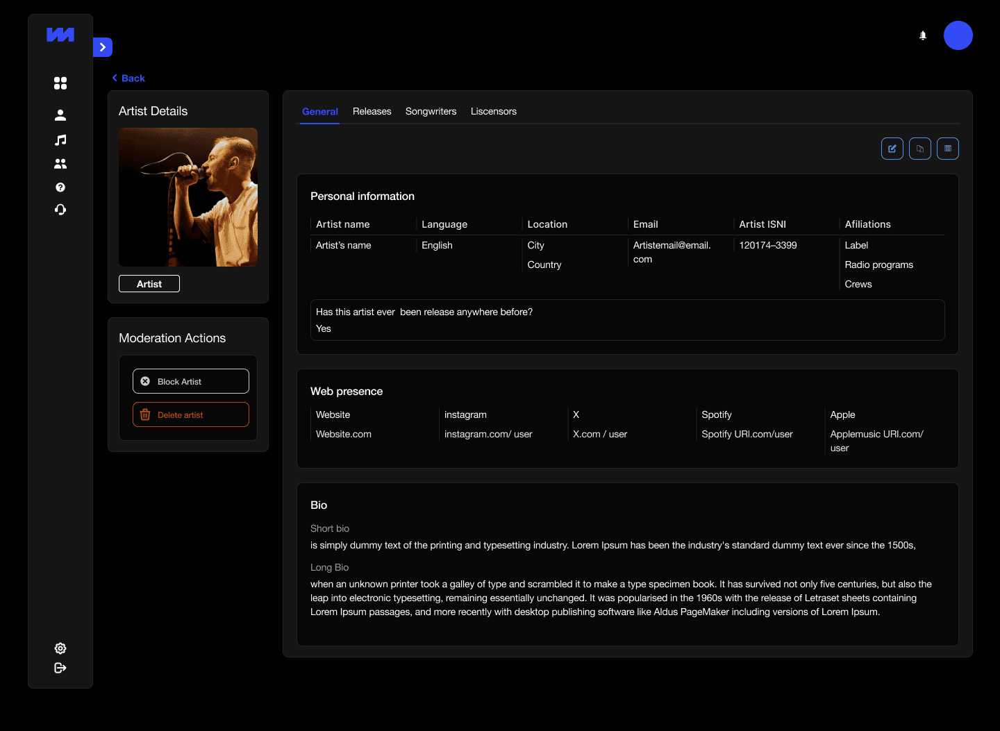
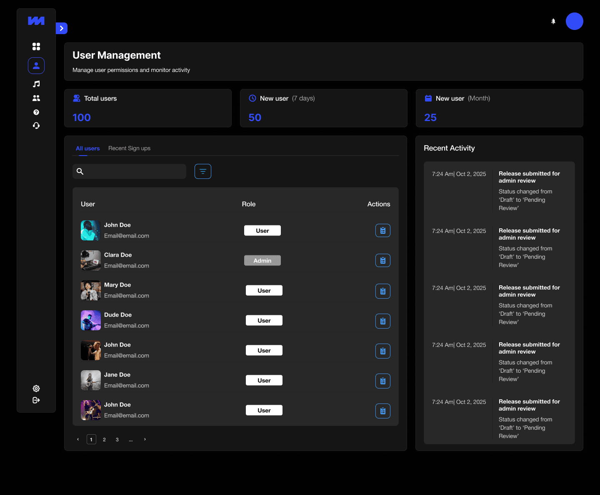
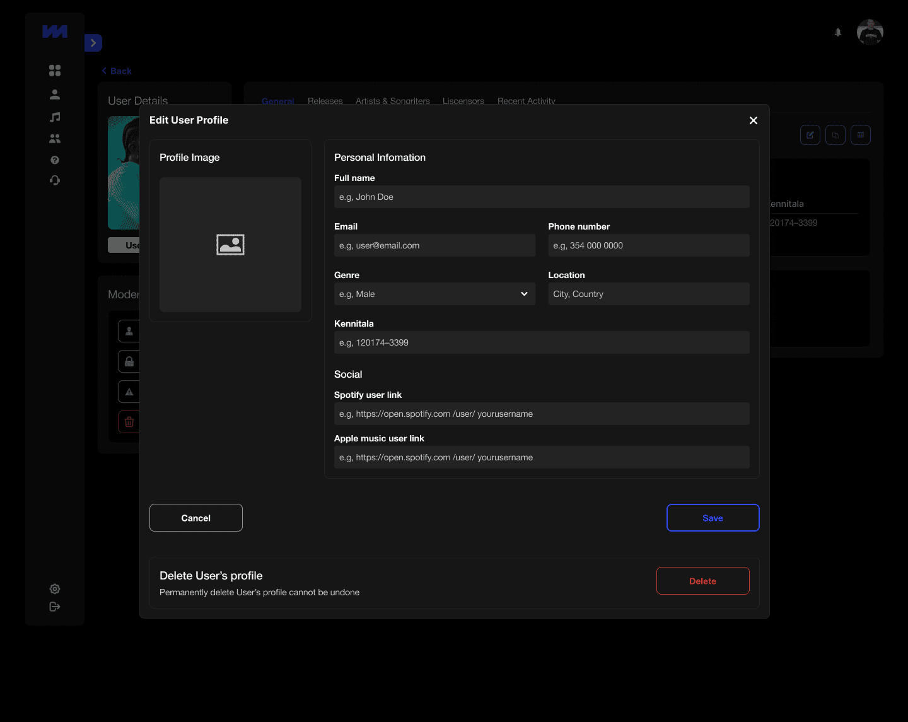

Veturmusic

At Veturmusic, I owned the full product lifecycle — research, design, and delivery — working across both Product Design and Project Management. The task: replace a manual, fragmented distribution process with a platform that artists and administrators could actually trust.
The Problem
Veturmusic's original workflow had three steps: a landing page, a login, and a form. Artists submitted music, files landed in a WordPress database, and an administrator manually distributed to streaming platforms — one by one, no tracking, no validation, no visibility for the artist after submission.

Early Explorations
The first screens established the core information architecture before any visual polish. The dashboard needed to answer two questions at a glance: how many releases exist, and what state are they in? Getting this data model right — what an artist needs to see versus what an admin needs to act on — shaped every design decision that followed.


Design Work
The final platform replaced every manual step with a structured, user-centered flow. A guided metadata wizard ensured every release met global platform standards before submission — eliminating the most common failure point. A real-time dashboard gave artists full visibility from draft to live. On the admin side, a centralized panel brought approval workflows, distribution management, and Label Grid API integration under one roof, replacing the manual handoff entirely.

Design System
Rather than designing screens in isolation, I built a modular design system from the ground up — a library of adaptive, reusable components that worked across both the artist portal and the admin dashboard. Every new feature could be assembled from existing building blocks, keeping the product visually coherent and reducing time from design to implementation.

Results
From a WordPress form to a platform artists and administrators can trust. Every step that was previously manual, untracked, or invisible now has a structured, automated counterpart.



